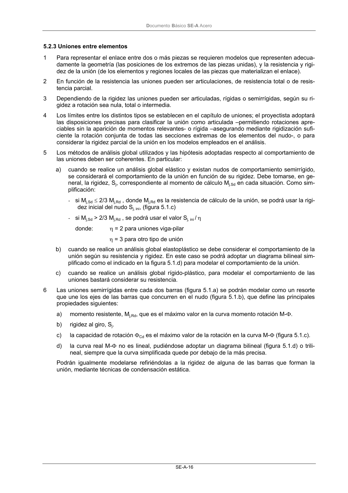

DB-SE-A · 5.2.2 Modelos de piezas · versión 2007-10-23 · capa oficial
Formatos: JSON compacto · Markdown · PDF fuente
Ámbito del documento · texto del ámbito · documento y tablas
ID técnico a0042 · PDF pág. 17-18 · jerarquía no validada por persona · contrastado con el literal de la página 17 (candidato tipográfico); no validado por persona · padre: raíz
5.2.2 Modelos de piezas 1 La piezas de acero se representarán mediante modelos unidimensionales o bidimensionales de acuerdo a sus dimensiones relativas. En el caso en que la relación entre las dos dimensiones fun- damentales de la pieza sea menor o igual que 2, deberán usarse modelos bidimensionales. 2 Las luces de cálculo de las piezas unidimensionales serán las distancias entre ejes de enlace. En piezas formando parte de entramados o pórticos estos ejes coinciden con las intersecciones de la directriz de la pieza con las de las adyacentes. En piezas embutidas en apoyos rígidos de dimen- sión importante en relación con su canto, puede situarse idealmente el eje en el interior del apoyo a medio canto de distancia respecto del borde libre. 3 En el análisis global de la estructura las piezas se representarán considerando sus secciones bru- tas, salvo en los casos indicados en 5.2.4, o cuando la reducción de una sección o de su eficacia pueda afectar significativamente al modelo. 4 La rigidez en torsión de las piezas puede ser ignorada en el análisis en los casos en que no resulte imprescindible para el equilibrio. DocumentoBásico SE-A Acero SE-A-16

PDF fuente redistribuible: copia fiel enlazada en esta página (SHA256 verificado).